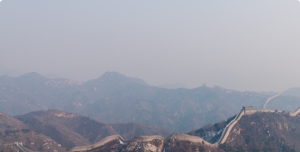
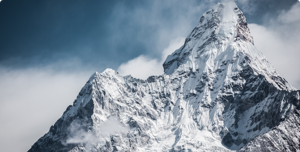

Watch intro video
Places in Asia
|  |  | |
|---|---|---|
| Great Wall, China | Siem Reap, Cambodia | Mt Everest, Nepal |
| He who has not climbed the Great Wall is not a true man. | The traveller's first glimpse of Angkor Wat, the ultimate expression of Khmer genius, is matched by only a few select spots on earth. | As the main approach route to Mount Everest (Sagarmatha), the Solukhumbu region has an almost mystical status in the world of trekking. |